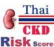

|  |
โปรแกรมนี้ทำขึ้นเพื่อใช้ประเมินความเสี่ยงต่อการเกิดโรคไตในคนไทย โดยแสดงผลเป็นความเสี่ยงต่อการเกิดโรคไตในระยะเวลา 10 สิบปีข้างหน้า ซึ่งสามารถใช้ได้ทั้งในกรณีที่ท่านไม่มีผลเลือดและในกรณีที่มีผลการตรวจเลือด แบบประเมินนี้สร้างขึ้นจากการติดตามศึกษาหาปัจจัยเสี่ยงต่อการเกิดโรคไตในประชากรไทยภายใต้โครงการศึกษาพนักงานการไฟฟ้าฝ่ายผลิตแห่งประเทศไทยเป็นระยะเวลายาวนานกว่า 20 ปี หากท่านมีข้อสงสัยหรือไม่แน่ใจแนะนำให้เข้ารับการประเมินโดยแพทย์ผู้เชี่ยวชาญ |
- คณะผู้วิจัยและจัดทำแบบประเมินนี้ประกอบด้วย
-

คณะแพทยศาสตร์ โรงพยาบาลรามาธิบดีมหาวิทยาลัยมหิดล
ศ.นพ. ปิยะมิตร ศรีธรา
รศ.นพ. ม.ล.ชาครีย์ กิติยากร
รศ. สมลักษณ์ วนะวนานต์
ผศ.ดร. อัญชลี จิตธรรมมา
นพ. ปริญญ์ วาทีสาธกกิจ
นพ. มนต์ธวัช อำนวยพล
นพ. สุวาณิช เตรียมชาญชูชัย
นส. พัชรา แพนพันธ์อ้วน
นส. นิสากร ทองมั่ง
นส. กฤติกา สราญบุรุษ
-

สำนักงานคณะกรรมการอุดมศึกษา
-

สำนักงานกองทุนสนับสนุนการวิจัย
-

สถาบันวิจัยระบบสาธารณสุข
-
สำนักงานแพทย์และอนามัยการไฟฟ้าฝ่ายผลิตแห่งประเทศไทย
พญ.อนินทิตา ทัศนียพันธุ์
-

สมาคมแพทย์โรคหัวใจแห่งประเทศไทย ในพระบรมราชูปถัมภ์
-

สำนักงานคณะกรรมการวิจัยแห่งชาติ
-

สำนักงานกองทุนสนับสนุนการสร้างเสริมสุขภาพ